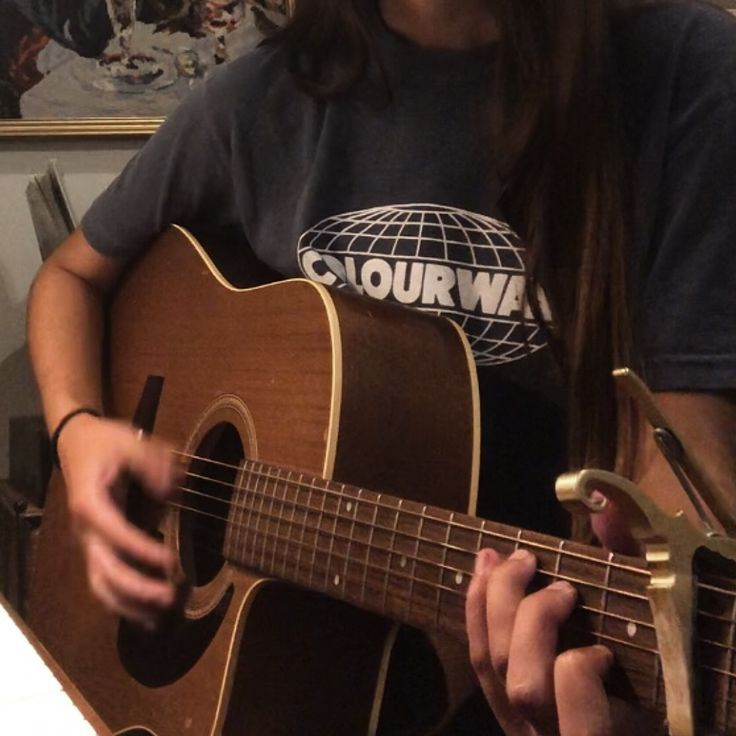
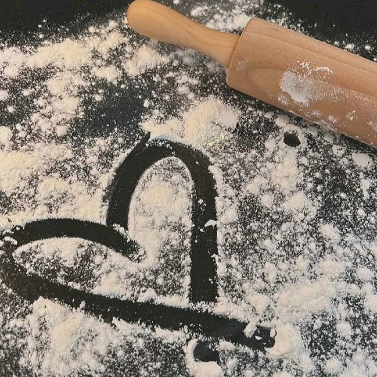
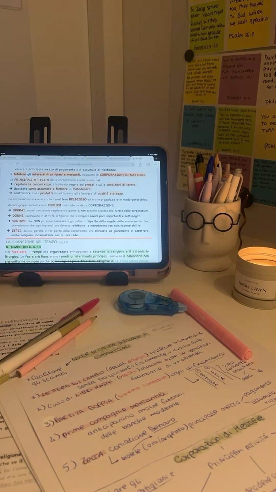
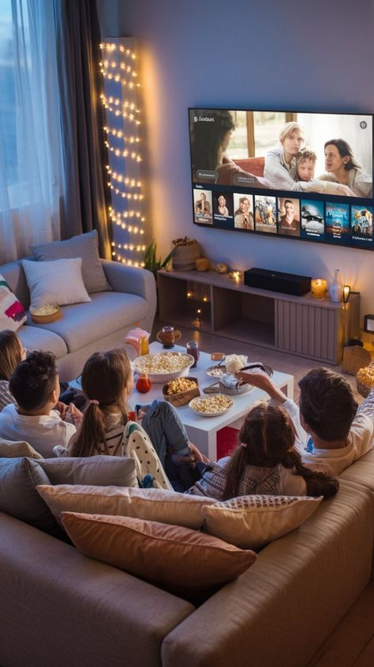

✨Eu toco violão desde os 8 anos de idade. Embora tenha feito algumas aulas, a maior parte eu aprendi sozinha. Hoje, o violão é uma maneira de relaxar e até mesmo desestressar, funcionando como uma forma de expressão para mim.
✨“A Seleção” é o melhor livro que já li na minha vida. Ele me encantou do início ao fim, fazendo com que eu vivesse e sentisse cada emoção junto com a personagem. É um romance envolvente que eu super recomendo!!!

✨Cozinhar é uma grande paixão minha, pois é a forma com que eu consigo relaxar e demonstrar amor para as pessoas que eu gosto. Eu faço doces e salgados, isso depende do que eu estiver afim de comer no dia.
✨Por mais que a maioria das pessoas não goste, eu aprecio estudar. Isso me deixa mais confiante e me faz bem, pois sei que estou me preparando e dando o meu melhor.
✨ Eu sou uma pessoa que valoriza muito momentos em família, mas esse hobbie junta filmes (que eu amo) e minha família, se tornando um momento especial🩷
✨Meu cabelo é cacheado, então na maior parte dos dias eu faço penteados. Na maioria das vezes, meus penteados recebem muitos elogios, o que transformou essa prática em um grande hobby. Por isso, estou sempre em busca de novos estilos e ideias de penteados🩷.
Clique aqui para ver o canal do youtube onde procuro meus penteados😉